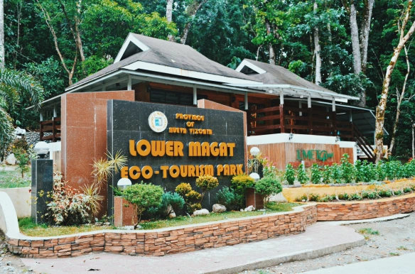

HOME
About Us
Destinations
Contact Us

Lowe Magat Eco-Tourism Park
located in the municipality of Diadi
If you are looking for a place that offers a more tranquil vibe, you may want to be at the Lower Magat Eco-Tourism Park. Located at Diadi, Nueva Vizcaya, this 1120-hectare spot is positioned in the lower part of the Magat River and has been ornamented with astounding plants, flowers, and natural landscapes. Aside from its serene environment that is just as enticing, this eco-park offers various activities for tourists such as boat riding, swimming, fishing, hiking, camping, and sightseeing of animals that are being well taken care of. With pleasant amenities and available accommodations which are perfect for overnight stays, this place is indeed a must-visit if you will come to the vicinity of the province one day.
In the generally mountainous Nueva Vizcaya, there's no shortage of attractions highlighting the beauty of nature. North of the province, at the municipality of Diadi, for instance, part of the 24,000-hectare Lower Magat Foreset Reserve has been converted into an ecotourism destination. Called Lower Magat Eco-Tourism (LMET) Park, the piece of land was first acquired by the provincial government from the Department of Environment and Natural Resources in 1969 for preservation and later on, development into a nature park.